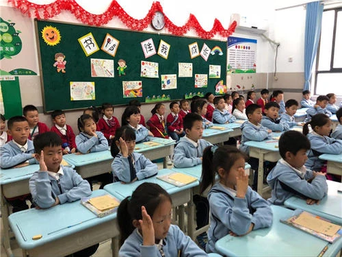
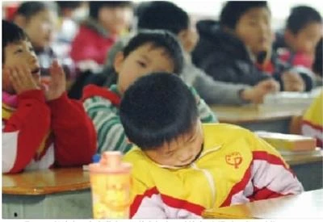
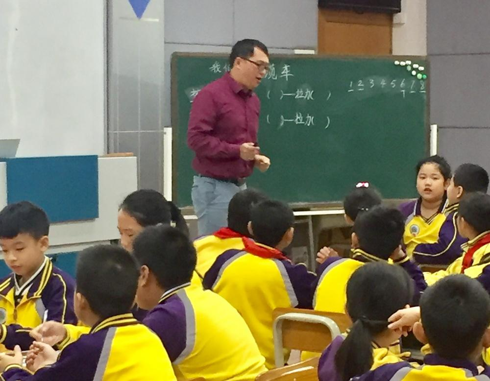
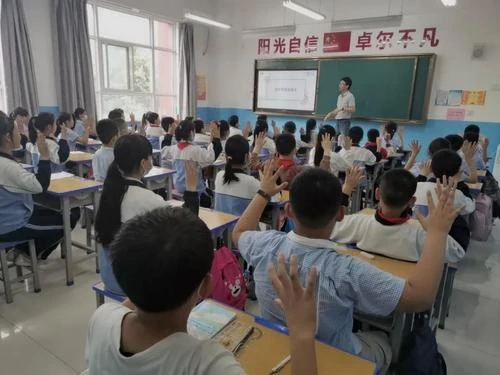
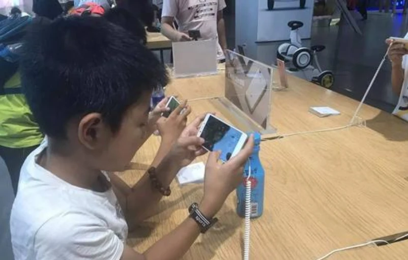
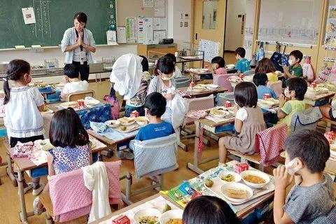
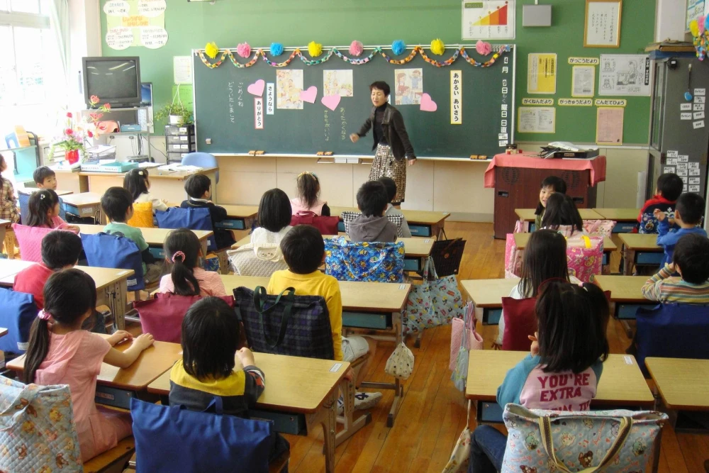
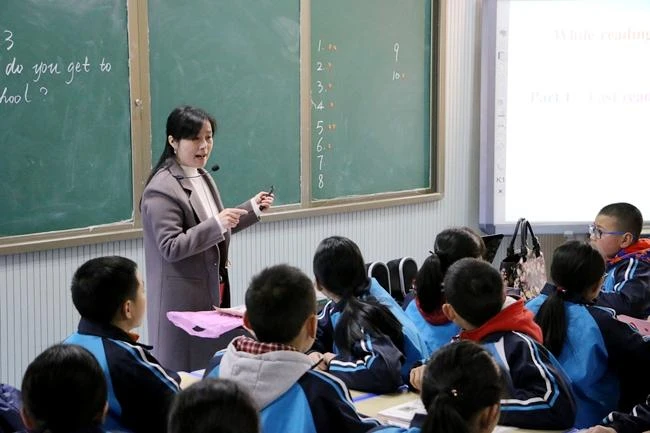

编辑：xuwenwei
2021-01-12 10:08:08
小朋友们上课的小动作相信是五花八门，那么这种行为，如何及时改正呢？
在家长或者老师的传统思想中，经常会把学生分好坏，成绩好的就是优等生，而成绩差又调皮不听话的学生就是差等生。对于家长们来说，没有一个希望自己的孩子在老师眼里是差等生的地位，毕竟这就代表自己的孩子有可能会被老师“放弃”。
但是只用成绩来判断一个学生的好坏有点过于绝对，毕竟并不是所有的孩子都是学习的料。尤其是对于小学生们来说，学习压力本就不重，在这个阶段需要培养的是孩子们的性格和好的学习习惯。可是每个班级中都有那么几个学习成绩不好，同学都不爱和他玩，老师们也不看好的学生。这更是让家长们担忧，自己的孩子到底有没有这种“差生”行为呢？

小学生们的“差生”行为
不注意听讲，搞小动作
尤其是对于刚上小学的学生们来说刚刚从幼儿园过渡到小学阶段，肯定是有很多不适应的地方，毕竟幼儿园和小学的作息时间和学习时间是不同的。在幼儿园接的大部分都是以玩为主，而到了小学阶段则是以听课为主，但是很多小学生并没有养成良好的听课习惯，同时并不了解学习的重要程度，因此会出现不注意听讲的现象。

再加上这个阶段的孩子还不懂得如何控制自己的行为，思想还一直停留在幼儿园的玩乐阶段，对于身边的一切都具有好奇心，这种好奇心就导致会分散孩子们学习的注意力。因此有的老师或者家长可能会发现自己的孩子不管是在学校还是在家都喜欢搞一些小动作，让家长和老师们都比较担忧。

爱和老师顶嘴
现在的小学生们大多都是10后。在处于一个信息爆发的时代，接触到的信息越多越容易让他们有开始形成自己独特的个性，虽然有个性是好事，但是在课堂上如果他有个性的话，可能就会给老师带来些许的麻烦。尤其是很多独生子女，更是喜欢在课堂上和老师顶嘴。而这样的学生，又有哪个老师会喜欢呢？

控制不住自己的情绪
今时不同往日，现在的小学生们大多数都是家中的小皇帝，小公主，家长都是听之任之的。因此他们会将这种情绪带到学校和课堂中去，认为学校和家里一样可以让自己肆意妄为。但是一旦得到了老师或者其他同学的制止，就会出现异常的情绪，比如大喊大哭等等，其实都是会让老师们比较反感的“差生”行为。

家长们面对这样的情况也容易不知所措，明明自己已经照顾的尽心尽力了，孩子出现这种情况家长也跟着着急。其实想要帮助孩子们纠正这些问题，还要从根源入手。
“差生”行为出现的原因
环境因素
上面曾经提到过，我们现在处于一个信息爆炸的时代。很多孩子从小就身处于网络环境中必然会受到来自各方的信息的影响。
除此之外，各种风靡的网络游戏也在充斥着孩子们的生活。而对于小学生们来说，还没有完全形成一个独立自主的抵抗能力，自然会受到这些外来刺激的“诱惑”。别说小学生们了，就连很多大人都时刻沉迷在其中，又怎么给孩子带来榜样作用呢？

家庭因素
由于家庭因素导致孩子出现“差生”行为一共有两个方面，一种是过渡溺爱，一种的放任自流。过度溺爱不难理解，现在的孩子们生活条件都比从前改善了很多，想要什么都能被满足。可是家长们过分满足了孩子的物质需要，但是却没有满足孩子性格上的缺失，这对于孩子的未来也是没有帮助的。

除此之外，另外一种家庭因素就是放任自流。现在很多的家长工作繁忙，没有太多的时间放在孩子的教育上，于是就把这个任务全盘放在了学校和老师肩上，可是老师们面对这数十个孩子也是分身乏术，因此对于“差生”行为的形成，作为家长，是有责任的。
及时改正能“逆袭”，看你是否能成学霸
自身角度
从学生自身的角度上看，要听进去家长和老师们的教导，认识到自己的错误，并且给表现出积极的改正态度。将自己的心里话多和家长或者老师倾诉，充分的相信老师和家长，才能有逆袭的机会。

家长角度
从父母的角度上说，首先就是要与孩子做朋友，面对孩子的任性行为要平心静气的指出错误。一味的大吼大叫只会让孩子更加叛逆。其次就是更多的与孩子沟通交流，让孩子敢在父母面前说出自己的心里话，父母才能知道自己的问题在哪儿，才能想办法对症下药，解决孩子与父母之间的矛盾和问题。
最后，家长要为孩子打造一个无电子设备干扰的学习环境，努力帮助孩子克服网络环境的影响，将注意力放在学习上，才能慢慢摆脱掉“差生”行为，逆袭成为学霸。
老师角度
老师是与学生接触时间最长的职业，并且相对于家长来说更具备权威和专业型，因此更能够发现学生行为上的问题。作为老师，在发现学生问题的同时应该给予及时的引导，并主动告知家长，根据孩子的性格和问题产生的原因制定相对应的解决方案。并且与学生多沟通，课下与学生做朋友，经常开心里话班会也是一个不错的选择。

“差生”行为是阻挡在孩子学习前面的绊脚石，其实只要孩子能够及时改正自己身上的这些“差生”行为，每个孩子都是有能够成为学霸的机会的。所以无论是家长还是老师，都要及时给予引导，让我们的孩子们能够茁壮成长。
今日话题：作为家长或老师，你是怎么处理孩子的“差生”行为的？
精品学习网(5iedu.com.cn)在建设过程中引用了互联网上的一些信息资源并对有明确来源的信息注明了出处，版权归原作者及原网站所有，如果您对本站信息资源版权的归属问题存有异议，请您致信qinquan#5iedu.com.cn(将#换成@)，我们会立即做出答复并及时解决。如果您认为本站有侵犯您权益的行为，请通知我们，我们一定根据实际情况及时处理。